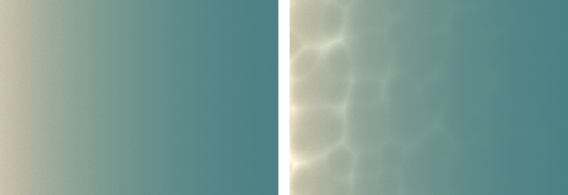
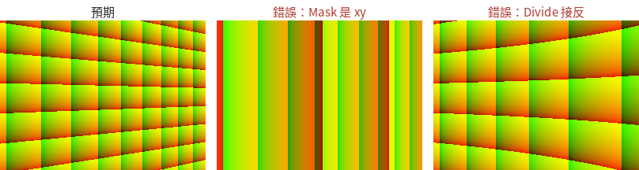
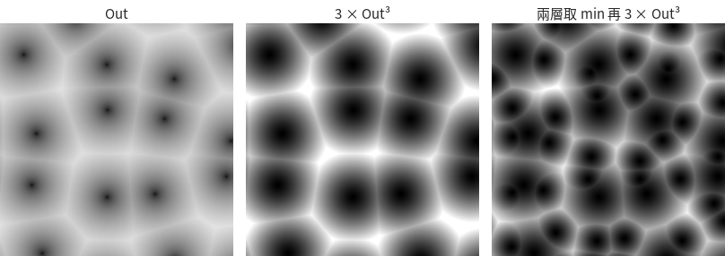
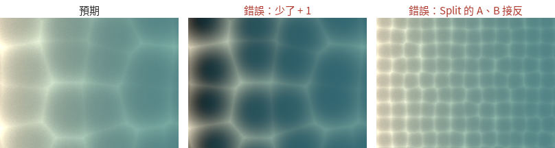
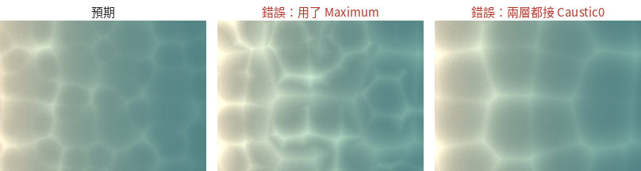
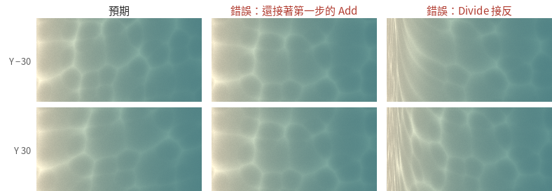
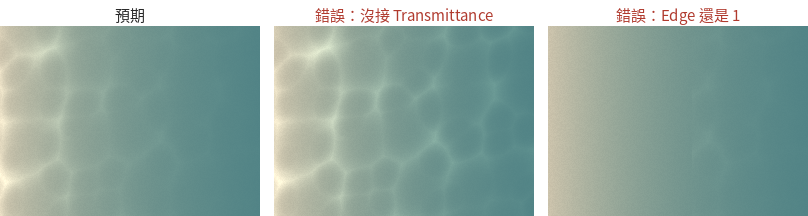
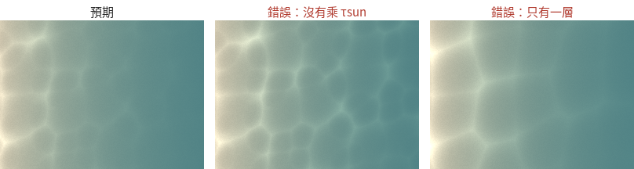

<!doctype html>
<html lang="zh-Hant">
<head>
<meta charset="utf-8">
<meta name="viewport" content="width=device-width, initial-scale=1">
<title>Caustics</title>
<script src="../_explainer/explainer.js"></script>
</head>
<body>
<script type="text/markdown" id="ex-content">
## 這一章要解決的問題

### 淺水的湖底一片平板

做完 [Reflection](reflection.html)，從岸邊往下看，淺水清澈見底，越深越暗，水下跟著波紋晃，遠處像鏡子。但看得到的湖底是一片均勻的沙色，像室內打光，看不出頭上有太陽。晴天的淺水裡，湖底會有一張亮線織成的網，一直在晃動、變形，水越淺越清楚。

這張網叫[[焦散]] (caustics)：水面的細波紋像一片片歪斜的小透鏡，把穿過水面的陽光聚到某些線上，線上變亮，線和線之間變暗。

這一章做的不是真實的焦散，只做出看起來像的效果：形狀由 Voronoi 決定，不算光線真正聚在哪裡。做出來的東西分成兩樣：

- **Voronoi 花紋**：用 Voronoi 做出的 low poly 風格的網，網線亮、網眼暗，決定湖底哪裡該亮。
- **Voronoi 亮紋**：Voronoi 花紋乘上強度、隨水深變淡之後，加到湖底的那份亮。

Voronoi 花紋的形狀是假的，行為照真實的焦散：

- 因為真實的焦散跟著細波紋漂，所以 Voronoi 花紋也隨時間漂，速度和細波紋相同 ([第二步](#第二步：做一層-Voronoi-亮紋)、[第三步](#第三步：第二層往另一個方向捲動))。
- 因為湖底收到的陽光是從朝太陽那一側的水面穿進來的，所以 Voronoi 花紋在從湖底往太陽回推到水面的那一點取樣 ([第四步](#第四步：沿太陽的方向投到湖底))。
- 因為陽光在水裡走得越遠被吸收得越多，所以 Voronoi 亮紋越深越淡 ([第五步](#第五步：越深越淡、只在水裡))。
- 因為水面的傾斜會把陽光推到旁邊，所以 Voronoi 花紋跟著細波紋與大浪晃動 ([第六步](#第六步：讓-Voronoi-亮紋跟著細波紋與大浪晃動))。

新參數放在設定資產 `SO_LakeWater` 裡；章末把這一章的 node 收成三個 Sub Graph。

<figure class="ex-ig"><figcaption>示意：從正上方看淺水的湖底，左邊是水邊線，往右越來越深 (每公尺深 0.3 公尺)。左：現在；右：這一章做完</figcaption></figure>

這一章只處理從水面上看到的湖底。從水下看到的焦散、照在水裡物體側面的焦散，不在這一章。

### 這一章怎麼走

| 步驟 | 做什麼 | 接下來要處理的 |
| --- | --- | --- |
| [第一步](#第一步：找出湖底那一點在世界的哪裡) | 從 depth 算出湖底那一點的 world position | 位置有了，湖底還沒有 Voronoi 花紋 |
| [第二步](#第二步：做一層-Voronoi-亮紋) | 做一層 Voronoi 亮紋，乘到水下畫面上 | 整張網朝同一個方向滑，線粗、交會的角上亮成一團 |
| [第三步](#第三步：第二層往另一個方向捲動) | 第二層往另一個方向捲動，兩層取比較暗的值 | Voronoi 花紋直直往下投，和太陽在哪裡無關 |
| [第四步](#第四步：沿太陽的方向投到湖底) | 沿太陽的方向投到湖底 | 深處的 Voronoi 亮紋和腳邊一樣分明 |
| [第五步](#第五步：越深越淡、只在水裡) | Voronoi 亮紋越深越淡、只出現在水面以下 | 網只隨時間漂，不跟著水面晃動 |
| [第六步](#第六步：讓-Voronoi-亮紋跟著細波紋與大浪晃動) | 讓水面的傾斜推動 Voronoi 花紋的取樣位置 | 新參數只在 Material 上 |
| [第七步](#第七步：把新參數搬進設定資產) | 參數搬進設定資產 | 這一章的 node 攤在主 graph 上 |
| [第八步](#第八步：把這一章的-node-收成-Sub-Graph) | 收成三個 Sub Graph | |

每一步之後都有「現在應該看到」和對照表；[第一步](#第一步：找出湖底那一點在世界的哪裡)到[第五步](#第五步：越深越淡、只在水裡)另有預期與常見錯誤並排的示意圖。檢查時站在岸邊、看腳邊到 2 公尺深的緩坡最清楚；示意圖都是從正上方看這段緩坡，左邊是水邊線。

## 第一步：找出湖底那一點在世界的哪裡

### Voronoi 花紋要釘在湖底上

**Voronoi 亮紋畫在湖底上，攝影機怎麼動，它都要留在湖底的同一個位置，所以 Voronoi 花紋的座標要用湖底那一點的 world position。水面這一點的 world position 和兩個 eye depth 已經在 graph 裡，湖底那一點就在同一條視線上，按 eye depth 的比例往前延伸就找到它。**

下面依序展開：為什麼按 eye depth 的比例延伸就對；用哪一個 depth；接線之後暫時畫成格子檢查。

### 同一條視線上，距離和 eye depth 成正比

<ex-fig of="bed-position-similar-triangles" caption="示意：側面。同一條視線上，湖底那一點的 eye depth 是水面那一點的 1.5 倍，它離攝影機也是 1.5 倍遠" />

畫水面某個像素時，手上有四樣東西：

| 符號 | 意思 | graph 裡從哪接 |
| --- | --- | --- |
| $\mathbf{p}_{\text{cam}}$ | 攝影機的 world position | Camera 的 Position (遠處淡出用的那一個 Camera) |
| $\mathbf{p}_{\text{w}}$ | 水面這一點的 world position | Position (World) (細波紋與遠處淡出共用的那一個) |
| $d_w$ | 水面這一點的 eye depth | Screen Position (Raw) → Split 的 A |
| $d_{\mathbf{u}}$ | 這個像素最後採用的水下畫面那一點的 eye depth | `SSG_Refraction_Select` 的 FinalDepth |

[eye depth](vector-math.html#換回距離) 是沿攝影機正前方 $\mathbf{f}$ (長度 1) 量的距離：$d = (\mathbf{p} - \mathbf{p}_{\text{cam}}) \cdot \mathbf{f}$。從攝影機穿過 $\mathbf{p}_{\text{w}}$ 的視線上，每一點都寫成 $\mathbf{p}_{\text{cam}} + a\,(\mathbf{p}_{\text{w}} - \mathbf{p}_{\text{cam}})$，代進去得 $d = a\,d_w$：eye depth 和 $a$ 成正比。湖底那一點的 eye depth 是 $d_{\mathbf{u}}$，所以 $a = d_{\mathbf{u}} / d_w$：

$$\mathbf{p}_{\text{bed}} = \mathbf{p}_{\text{cam}} + \frac{d_{\mathbf{u}}}{d_w}\,(\mathbf{p}_{\text{w}} - \mathbf{p}_{\text{cam}})$$

例：攝影機在 $(0,\ 2,\ 0)$、往 $+z$ 前下方 20 度看，水面這一點 $\mathbf{p}_{\text{w}} = (0,\ 0,\ 2.67)$，$d_w = 3.19$；湖底那一點 $d_{\mathbf{u}} = 4.79$，比例 $4.79 / 3.19 = 1.5$：

$$\mathbf{p}_{\text{bed}} = (0,\ 2,\ 0) + 1.5\,(0,\ -2,\ 2.67) = (0,\ -1,\ 4)$$

那一點在水面 ($y = 0$) 下 1 公尺。

從 screen position 和 depth 也能用 `ComputeWorldSpacePosition` [一路反推回 world position](vector-math.html#還原湖底那一點的位置)；這裡水面這一點的 world position 已經有了，只要一個比例，所以用 node 就接得出來。

### 用最後採用的那一點的 depth

透光率 $\tau$ 是在最後採用的位置量的：`SSG_Absorption` 的 Thickness 接第二個 `SSG_Thickness`，算的是 $h_1 = \max(d_{\mathbf{u}} - d_w,\ 0)$，因為顏色要和 Scene Color 取到的那一點對得上。Voronoi 亮紋也是加在那一點的顏色上，所以同樣用 $d_{\mathbf{u}}$，不用沒有 offset 的 $d_s$；否則魚的影像被 offset 開之後，魚身上的 Voronoi 亮紋會留在原地。

簡化：實際上 $\mathbf{p}_{\text{bed}}$ 是在這個像素自己的視線上、深度 $d_{\mathbf{u}}$ 的點，不是 offset 後那條視線碰到的點，兩者水平差約 0.1 公尺 (10 公尺外、offset 0.01 時)；所以 Voronoi 亮紋跟著細波紋晃得比湖底少一點。$h_1$ 用的是同一個近似。另外，Split 的 A 等於 eye depth 只在透視攝影機成立，正交攝影機下這個式子不能用。

### 接線：算出湖底的位置，暫時畫成格子

1. 加入 node

   Camera 已經在 graph 裡 (遠處淡出用它的 Position)，從它的 Position 再拉兩條線出來，不必另放一個。

   <ex-fig of="caustic-bed-position-graph" caption="第一步的 graph。綠框是新加的 node 與線；標「暫時」的兩個 node 只用來檢查，看完就刪" />

   | node | 設定 | 輸入接什麼 | 算出 |
   | --- | --- | --- | --- |
   | Subtract | | A ← Position (World，已有)；B ← Camera (已有) 的 Position | $\mathbf{p}_{\text{w}} - \mathbf{p}_{\text{cam}}$ |
   | Divide | | A ← `SSG_Refraction_Select` 的 FinalDepth；B ← Screen Position (Raw) → Split 的 **A** ($d_w$) | $d_{\mathbf{u}} / d_w$ |
   | Multiply | | A ← Subtract；B ← Divide | |
   | Add | | A ← Camera 的 Position；B ← Multiply | $\mathbf{p}_{\text{bed}}$ |

2. 暫時畫成格子

   | node | 設定 | 輸入接什麼 |
   | --- | --- | --- |
   | Swizzle「暫時」 | Mask：**xz** | In ← Add |
   | Fraction「暫時」 | | In ← Swizzle |
   | Fragment 的 Emission | | ← Fraction (暫時取代 Multiply「Emission × (1 − F_r)」的線) |

   **Fraction** (Math > Range > Fraction) 只留小數部分：$x = 3.7$ 時是 0.7。所以 $x_{\text{bed}}$ 每走 1 公尺，紅色從 0 爬到 1 再跳回 0；$z_{\text{bed}}$ 同樣管綠色。Vector 2 接到 Vector 3 的 Emission 時，Shader Graph 補 0 當藍色。

3. 按 Save Asset

```hlsl 對照：這一步的 node 等於這幾行
float3 bedWS = cameraPosWS + (finalDepth / dw) * (positionWS - cameraPosWS);
emission = float3(frac(bedWS.xz), 0);   // 暫時
```

### 現在應該看到

- 水面上換成一格一格的紅綠漸層：從正上方看，每格 1 公尺見方，往 $+x$ 越來越紅、往 $+z$ 越來越綠。
- 攝影機移動、轉動時，格子黏在湖底上，不跟著滑。
- 沉底的石頭、魚身上也有格子，貼著它們的表面。
- 湖心也看得到格子：暫時接的 Emission 沒有乘透光率。

<figure class="ex-ig"><figcaption>示意：從正上方看，左邊是水邊線，往右越深。左：預期；中：Swizzle 的 Mask 是 xy；右：Divide 的 A、B 接反</figcaption></figure>

| 看到的現象 | 原因通常是 | 怎麼修 |
| --- | --- | --- |
| 和原本一樣 | Emission 還接著原本的線 | 暫時改接 Fraction |
| 格子跟著攝影機一起移動 | Add 的 A 沒接 Camera 的 Position，算出來的是相對攝影機的位置 | A ← Camera 的 Position |
| 格子大小隨攝影機遠近改變，移動時滑動 | Divide 的 A、B 接反 | A ← FinalDepth、B ← Split 的 A |
| 格子被拉成一條條平行的線 | Swizzle 的 Mask 是 xy | 改成 xz |
| 攝影機貼近水面看魚，魚的輪廓旁邊的格子斷開、錯位 | Divide 的 A 接成 Scene Depth「$d_s$」(沒有 offset 的深度) | A ← `SSG_Refraction_Select` 的 FinalDepth |

看完刪掉兩個「暫時」的 node，Emission 接回 Multiply「Emission × (1 − F_r)」，按 Save Asset。水面回到原本的樣子。

湖底每一點的 world position 有了，而且攝影機怎麼動都不變，正好拿來當 Voronoi 花紋的座標。下一步就用它的 $x$、$z$ 做出 Voronoi 亮紋。

## 第二步：做一層 Voronoi 亮紋

### 從到最近一點的距離做出網

**真實的焦散是一張亮線圍成的網：網眼暗，邊界亮。Voronoi node 在平面上撒一堆點，輸出每個位置到最近那個點的距離：點上是 0，越靠近兩個點的中間線越大，而這些中間線拼起來正好是一張多邊形的網。把距離取幾次方，壓暗網眼、讓亮度往邊界集中，就是 Voronoi 花紋：一張邊是直線的 low poly 網；乘上強度成為 Voronoi 亮紋，再乘到水下畫面上，湖底就亮在網上。一層做出來的網線還粗，交會的角上亮成一團，下一步再用第二層把它切細。**

<figure class="ex-ig"><figcaption>示意：5 公尺見方，照 Emission 顯示的亮度，白是 1 以上。左：一層 Voronoi 的 Out；中：3 × Out³；右：兩層取比較小的值再算 3 × Out³ (第三步)</figcaption></figure>

下面依序展開：Voronoi node 算什麼；怎麼只留邊界的亮；Voronoi 花紋的 UV；Voronoi 亮紋怎麼加到水下畫面上。

### Voronoi node

**Voronoi** (Create Node > Procedural > Noise > Voronoi) 把平面切成方格，每格裡放一個亂數決定位置的點，輸出這個位置到最近那個點的距離：

| 埠 | 型別 | 用途 |
| --- | --- | --- |
| UV | Vector 2 | 位置 |
| AngleOffset | Float | 點在格子裡怎麼分布，預設 2 |
| CellDensity | Float | 每單位長度切幾格，預設 5 |
| Out | Float | 到最近那個點的距離，以格子的邊長為 1 |
| Cells | Float | 最近那個點在格子裡的 $x$ 座標 (這一章不用) |

node 上還有一個 **Hash Type** 下拉選單 (Deterministic、LegacySine)，新加的 node 預設是 Deterministic，維持預設。依 node 的產生碼 (只留這裡用到的部分)：

```hlsl 對照：Voronoi node 的產生碼 (Hash Type Deterministic，整理過)
void Unity_Voronoi(float2 UV, float AngleOffset, float CellDensity, out float Out)
{
    float2 g = floor(UV * CellDensity);   // 在第幾格
    float2 f = frac(UV * CellDensity);    // 在格子裡的位置
    Out = 8.0;
    for (int y = -1; y <= 1; y++)
    for (int x = -1; x <= 1; x++)          // 自己和周圍 8 格
    {
        float2 h = Hash(g + float2(x, y)); // 這一格的亂數，兩個分量都在 0 到 1
        float2 p = float2(sin(h.y * AngleOffset), cos(h.x * AngleOffset)) * 0.5 + 0.5;
        Out = min(Out, distance(float2(x, y) + p, f));
    }
}
```

`Hash` 代表 node 用的雜湊函式 `Hash_Tchou_2_2`，每一格從它拿到兩個 0 到 1 的亂數 $h_x$、$h_y$。產生碼依序做三件事：

- **每格放一個點**：點在格子裡的位置是

  $$p = \tfrac{1}{2}\,\bigl(\sin(a\,h_y),\ \cos(a\,h_x)\bigr) + \tfrac{1}{2}$$

  $a$ 是 AngleOffset。$a = 2$ 時，$\sin(2h_y)$ 落在 0 到 1、$\cos(2h_x)$ 落在 −0.42 到 1，所以點的 $x$ 在 0.5 到 1、$y$ 在 0.29 到 1，都偏向格子的右上，排得比較整齊；$a$ 越大，點散得越亂。
- **每處歸給最近的點**：歸給同一個點的範圍是一塊凸多邊形，叫一個 cell。相鄰兩個 cell 的邊界是兩點連線的中垂線，所以 cell 的邊是直線。
- **輸出到那個點的距離**：Out 在點上是 0，往 cell 的邊界變大，在幾個 cell 交會的角上最大，接近 1。整片來看，Out 的中位數約 0.41。

<iframe src="../_diagram/interactive/voronoi-net/index.html" title="平面上撒一堆點，每處歸給最近的點，邊界怎麼連成網？" style="height:560px"></iframe>

### 只留靠近邊界的亮：Power

Out 從點到邊界是慢慢變大的 (上圖左)，直接當亮度，整片都是灰的。取 $n$ 次方，小的值壓得更小，大小的差距拉開：

$$c = \delta^{n}$$

$\delta$ 是 Voronoi 的 Out，$n$ 是新的 Property `CausticPower` (預設 3)，$c$ 是 Voronoi 花紋。$n = 3$、乘上強度 $I$ (預設 3) 之後：

| $\delta$ | 0.1 | 0.2 | 0.3 | 0.4 | 0.5 | 0.6 |
| --- | --- | --- | --- | --- | --- | --- |
| $I\,c = 3\,\delta^3$ | 0.003 | 0.024 | 0.081 | 0.19 | 0.38 | 0.65 |

$\delta$ 從 0.3 到 0.5 才多了不到一倍，$3\,\delta^3$ 多了 4.6 倍，所以亮度往邊界集中 (上圖中)。但一層的 Out 大多不小：中位數 0.41 代入是 0.21，所以一半的湖底至少亮了兩成，只有靠近點的網眼中間接近 0；交會的角上 Out 接近 1，$3\,\delta^3$ 超過 1，湖底亮一倍以上。所以一層做出來的網，線粗、角上亮成一團。cell 的邊是直線，所以網是多邊形，和 low poly 的地形、石頭搭得起來。$n$ 越大，線越細、亮團越小。

### Voronoi 花紋的 UV：釘在湖底、隨時間漂移

細波紋的 UV 釘在世界裡、隨時間漂移 (`SSG_Ripple_Layer` 裡的做法)，這裡照做，位置換成湖底那一點：

$$\mathbf{u}_{\text{c}} = (x_{\text{bed}},\ z_{\text{bed}}) - \mathbf{v}\,t$$

$\mathbf{v}$ 是漂移的速度 (公尺 / 秒)，$t$ 是 `_WaterTime`。每公尺幾格 $s_{\text{c}}$ 接 Voronoi 的 CellDensity，node 自己在裡面乘，所以和細波紋一樣是先減再乘，改 $s_{\text{c}}$ 不會改變漂移的速度。

一層要調的數字有：$\mathbf{v}$ (2 個數字)、$s_{\text{c}}$、AngleOffset，照 `Ripple0` 的排法收進一個 Vector 4 Property `Caustic0`：

| 分量 | 放什麼 | 預設 |
| --- | --- | --- |
| $x$、$y$ | $\mathbf{v}$ (world $x$、$z$) | 0.3、0.1 |
| $z$ | $s_{\text{c}}$ | 0.7 |
| $w$ | AngleOffset | 2 |

因為真實的焦散是細波紋聚光做出來的，跟著細波紋漂，所以 Voronoi 花紋的速度和細波紋的第一層 `Ripple0` 相同。$s_{\text{c}} = 0.7$ 時一格約 $1 / 0.7 \approx 1.4$ 公尺。

### 乘到水下畫面上

Voronoi 亮紋代表額外照到湖底的陽光，湖底用自己的顏色把它反射出來，所以它乘在湖底的顏色上：沙地上的 Voronoi 亮紋偏沙色，深色的石頭上的也暗。Scene Color 的 Out 是從 opaque texture 讀到的水下畫面 $C_{\text{scene}}$，就是湖底照過光的顏色，把它換成

$$C_{\text{caus}} = (1 + \eta)\,C_{\text{scene}}, \qquad \eta = I\,c$$

$\eta$ 就是 Voronoi 亮紋，也是湖底多亮的比例：網眼中間接近 0，一半的湖底超過 0.2，交會的角上超過 1。簡化：實際上 $C_{\text{scene}}$ 裡也有環境光，乘 $1 + \eta$ 時一起被放大。

$C_{\text{scene}}$ 原本接著 Emission 那一串 Multiply，現在接 Emission 的是

$$E = (1 - F_{\text{r}})\,\tau\,(1 - f)\,C_{\text{tint}}\,C_{\text{scene}}$$

$\tau$ 是透光率，$f$ 是泡沫，$C_{\text{tint}}$ 是穿過水的染色，$1 - F_{\text{r}}$ 是從水裡出來的光隨角度讓位的比例。$C_{\text{caus}}$ 插在 $C_{\text{scene}}$ 的位置，這幾個乘數原封不動：深處的 Voronoi 亮紋被 $\tau$ 擋掉，泡沫底下沒有 Voronoi 亮紋，低角度看遠處時它跟著湖底一起讓位給倒影，都不必另外做。

新的 Property `CausticStrength` 就是 $I$，`CausticPower` 就是 $n$。

### 接線

1. 建立 Property (Scope **Per Material**、Show In Inspector 勾選)

   | Name | 型別 | Mode | Default Value |
   | --- | --- | --- | --- |
   | `Caustic0` | Vector 4 | | (0.3, 0.1, 0.7, 2) |
   | `CausticPower` | Float | Slider (Min 1、Max 8) | 3 |
   | `CausticStrength` | Float | Slider (Min 0、Max 10) | 3 |

   確認 Reference 是 `_Caustic0`、`_CausticPower`、`_CausticStrength`。

2. 加入 node

   <ex-fig of="caustic-voronoi-pattern-graph" caption="第二步 (前半)：Voronoi 花紋。綠框是新加的 node 與線" />

   <ex-fig of="caustic-scene-color-gain-graph" caption="第二步 (後半)：乘到水下畫面上。綠框是新加或改接的 node 與線；Multiply「背景 τ」的 A 原本接 Scene Color" />

   | node | 設定 | 輸入接什麼 | 算出 |
   | --- | --- | --- | --- |
   | Swizzle | Mask：**xz** | In ← [第一步](#第一步：找出湖底那一點在世界的哪裡)的 Add | $(x_{\text{bed}},\ z_{\text{bed}})$ |
   | Swizzle | Mask：**xy** | In ← Caustic0 | $\mathbf{v}$ |
   | Multiply | | A ← Swizzle ($\mathbf{v}$)；B ← WaterTime (Blackboard 上已有的再拖一個進來) | $\mathbf{v}t$ |
   | Subtract | | A ← Swizzle (xz)；B ← Multiply | $\mathbf{u}_{\text{c}}$ |
   | Split | | In ← Caustic0 (可以再拖一個進來) | B = $s_{\text{c}}$、A = AngleOffset |
   | Voronoi | Hash Type 維持 Deterministic | UV ← Subtract；AngleOffset ← Split 的 **A**；CellDensity ← Split 的 **B** | Out = $\delta$ |
   | Power | | A ← Voronoi 的 Out；B ← CausticPower | $c$ |
   | Multiply | | A ← Power；B ← CausticStrength | $I\,c$ |
   | Add | | A ← 上一個 Multiply；B 填 **1** | $1 + \eta$ |
   | Multiply「焦散」 | | A ← Scene Color 的 Out；B ← Add | $C_{\text{caus}}$ |
   | Multiply「背景 τ」(已有) | | A ← Multiply「焦散」(取代 Scene Color 的線)；B 不變 (`SSG_Absorption` 的 Transmittance) | |

3. 按 Save Asset

```hlsl 對照：這一步的 node 等於這幾行
float2 uvC = bedWS.xz - Caustic0.xy * WaterTime;
float delta = Voronoi(uvC, Caustic0.w, Caustic0.z);   // Voronoi node 的 Out
float eta = CausticStrength * pow(delta, CausticPower);
float3 sceneCaus = (1 + eta) * sceneColor;            // 取代原本的 sceneColor
```

`Voronoi` 代表 Voronoi node，不是現成的函式。

### 現在應該看到

- 淺水的湖底出現 Voronoi 亮紋織成的網：網眼中間暗、往外漸亮，邊是直線的多邊形，大的約 1.4 公尺；線粗，幾個網眼交會的角上亮成一團。
- 整張網往 $+x$ (稍偏 $+z$) 漂，每秒約 0.3 公尺，形狀不變。
- 沉底的石頭、魚身上也有網；越往湖心越暗，湖心看不到。
- 泡沫上沒有網；壓低攝影機看遠處，網跟著湖底一起被倒影蓋過。
- 在 Material 上把 CausticPower 改成 1：網消失，整片湖底從點往外一圈圈變亮；改成 6：線變細、亮團變小。看完改回 3。

<figure class="ex-ig"><figcaption>示意：從正上方看，左邊是水邊線。左：預期；中：Multiply「焦散」的 B 少了 + 1；右：Split 的 A、B 接反</figcaption></figure>

| 看到的現象 | 原因通常是 | 怎麼修 |
| --- | --- | --- |
| 和原本一樣 | Multiply「背景 τ」的 A 還接著 Scene Color | A ← Multiply「焦散」 |
| 水下的畫面整片變黑，只剩網 | Multiply「焦散」的 B 接成 $I\,c$ 的 Multiply，少了 + 1 | B ← Add |
| 網很密、細碎得像雜訊 | Split 的 A、B 接反，CellDensity 拿到 2 | CellDensity ← B、AngleOffset ← A |
| 看不出網，整片湖底一起變亮 | Power 的 B 沒接 CausticPower (未接時是 2)，或 CausticPower 是 1 | B ← CausticPower，值 3 |
| 網像畫在水面上，攝影機一動就和湖底錯開 | Swizzle (xz) 的 In 接成 Position (水面這一點) | In ← [第一步](#第一步：找出湖底那一點在世界的哪裡)的 Add |
| 網不動 | Multiply 的 B 沒接 WaterTime | 照表接 |

Voronoi 花紋有了，而且釘在湖底上。但它是同一張網整片平移，看久了像一張印了圖案的紙在湖底滑；線也粗，交會的角上亮成一團，不像線。真實的焦散一直在生滅、變形，所以下一步再疊一層往別的方向走的網，讓兩層互相切斷。

## 第三步：第二層往另一個方向捲動

### 兩張網只留重疊的亮處

**同一個 Voronoi 換一個每公尺幾格、往另一個方向漂，再讀一次；兩層的 Out 取比較小的那個，再取 $n$ 次方。比較小的值只在兩層都靠近邊界時才大，所以 Voronoi 亮紋只留在兩張網重疊的地方：網被切成長短不一的細線，兩層一直錯開，Voronoi 亮紋就一直生滅、變形。**

兩層的 Out 記作 $\delta_0$、$\delta_1$：

$$\delta = \min(\delta_0,\ \delta_1), \qquad c = \delta^{n}$$

例：某一點在第一層的邊界上 $\delta_0 = 0.55$，在第二層的點附近 $\delta_1 = 0.15$，$n = 3$。

| 怎麼合 | 合出來的 $\delta$ | $3\,\delta^3$ | 這一點 |
| --- | --- | --- | --- |
| 取比較小的 (Minimum) | 0.15 | 0.01 | 暗 |
| 取比較大的 (Maximum) | 0.55 | 0.50 | 亮 |

取比較大的，只要任一層靠近邊界就亮，等於兩張完整的網疊在一起，線變成兩倍多；取比較小的，要兩層都靠近邊界才亮，一張網被另一張的網眼切斷。上一步交會角上的亮團，也只有另一層剛好也在邊界時才留下來，所以亮團變少 ([第二步](#第二步：做一層-Voronoi-亮紋)的圖右)。整片來看，$3\,\delta^3$ 超過 0.1 的面積從一層的約 68% 降到約 46%，超過 1 的幾乎沒有。

第二層的預設是 **(−0.15, 0.25, 1.1, 2)**：速度和細波紋的第二層 `Ripple1` 相同，一格約 0.9 公尺。兩層的格子大小不成整數倍，疊起來看不出重複。

### 接線

1. 建立 Property `Caustic1`：Vector 4、Default Value (−0.15, 0.25, 1.1, 2)、Scope **Per Material**、Show In Inspector 勾選；Reference 是 `_Caustic1`。

2. 複製第一層

   <ex-fig of="caustic-two-layer-min-graph" caption="第三步的 graph。綠框是新加的 node 與線；第一層的 Voronoi 與 Power 只畫出這一步用到的接口" />

   框選[第二步](#第二步：做一層-Voronoi-亮紋)的 Swizzle (xy)、Multiply ($\mathbf{v}t$)、Subtract、Split、Voronoi 五個 node，Ctrl+C、Ctrl+V，外面的線補上：

   | 複製出來的 node | 輸入接什麼 |
   | --- | --- |
   | Swizzle (xy)、Split | In ← 新拖進來的 `Caustic1` |
   | Multiply | B ← WaterTime |
   | Subtract | A ← [第二步](#第二步：做一層-Voronoi-亮紋)的 Swizzle (xz) |

3. 合起來

   | node | 輸入接什麼 | 算出 |
   | --- | --- | --- |
   | Minimum (Math > Range > Minimum) | A ← 第一層的 Voronoi 的 Out；B ← 第二層的 Voronoi 的 Out | $\delta$ |
   | Power (已有) | A ← Minimum (取代第一層 Voronoi 的線)；B 不變 | $c$ |

4. 按 Save Asset

### 現在應該看到

- 網斷成長短不一的細線，比上一步細，交會角上的亮團變少。
- Voronoi 亮紋一邊漂一邊生滅、變形，看不出整片朝同一個方向滑。
- 在 Material 上把 `Caustic1` 的 $z$ 改成 3：第二層的格子變小，Voronoi 亮紋碎成短短的小段。看完改回 1.1。

<figure class="ex-ig"><figcaption>示意：從正上方看，左邊是水邊線。左：預期；中：用了 Maximum；右：複製出來的 Swizzle、Split 還接著 Caustic0</figcaption></figure>

| 看到的現象 | 原因通常是 | 怎麼修 |
| --- | --- | --- |
| 線變得更密，像兩張網疊在一起 | 用了 Maximum | 換成 Minimum |
| 和上一步一樣 | Power 的 A 還接著第一層的 Voronoi | A ← Minimum |
| 兩層一起往同一方向漂 | 複製出來的 Swizzle、Split 還接著 `Caustic0` | 改接 `Caustic1` |

Voronoi 亮紋像真實的焦散了。但選取 Directional Light 轉一轉，網一點都不動，好像太陽永遠在頭頂。陽光是斜著照進水裡的，所以下一步讓 Voronoi 花紋沿著陽光的方向投到湖底。

## 第四步：沿太陽的方向投到湖底

### 用陽光把水面的圖案照到湖底

**把 Voronoi 花紋想成一張貼在水面的圖案，用陽光把它照到湖底。第三步取的是湖底那一點的 $(x_{\text{bed}},\ z_{\text{bed}})$，等於從正上方直直照下來：湖底每一點都拿頭頂正上方的圖案，網死死卡在正上方，太陽怎麼轉都不動。改成沿陽光照：從湖底往太陽的方向回推，碰到水面的那一點，就是照到湖底這一點的圖案，Voronoi 花紋改在那一點取樣。因為真實的焦散也是在水面聚光、再由陽光帶到湖底，所以這樣照最像：太陽一動，網就像影子一樣跟著滑；越深，回推的路越長，偏離正上方越遠。**

<ex-fig of="caustic-sun-projection" caption="示意：側面，太陽高 50 度。水深 1 公尺的點收到的光，沿斜邊在水裡走了 1.31 公尺 (h_sun)，從正上方往太陽那一側 0.84 公尺的水面穿進來；斜邊和鉛直線夾 40 度 (ψ)。左上：長度 1 的 ℓ，鉛直分量 0.766 = cos 40°" />

下面依序展開：太陽的方向和水面的高度從哪來；怎麼回推到水面。

### Main Light Direction 與 Object node

**Main Light Direction** (Create Node > Input > Lighting > Main Light Direction) 給 URP 的 main light 的方向。main light 是 Lighting 視窗的 Sun Source 指定的那盞燈 (`RenderSettings.sun`)，沒有指定時是強度最大的 Directional Light；這個湖的場景只有一盞 Directional Light，就是它：

| 埠 | 型別 | 用途 |
| --- | --- | --- |
| Direction | Vector 3 | 陽光前進的方向，world space、長度 1，記作 $\boldsymbol{\ell}$ |

依 URP 的原始碼，它是 `-GetMainLight().direction`。Lit 算光照用的 `direction` 是從表面指向太陽，取負號後就是光從太陽射出去的方向，朝下，所以 $\ell_y < 0$。例：Directional Light 的 Rotation 是 (50, −30, 0) 時，$\boldsymbol{\ell} = (-0.321,\ -0.766,\ 0.557)$，太陽在 50 度高。

**Object** (Create Node > Input > Scene > Object) 給這個物件 (水面) 的資料，這裡只用 Position：

| 埠 | 型別 | 用途 |
| --- | --- | --- |
| Position | Vector 3 | 物件的 world position |

`WaterBody` 的波浪以物件的 $y$ 為靜止時的水面高度 (`WaterSurface` 的 Position 是 0)，所以 Object 的 Position 的 $y$ 就是靜止的水面高度 $y_0$。

### 從湖底往太陽回推到水面

湖底那一點在靜止水面下多深：

$$H = y_0 - y_{\text{bed}}$$

從 $\mathbf{p}_{\text{bed}}$ 逆著陽光 (往 $-\boldsymbol{\ell}$) 走 $h_{\text{sun}}$ 公尺，走的是上圖直角三角形的斜邊。因為 $\boldsymbol{\ell}$ 長度 1，它的鉛直分量 $-\ell_y$ 就是陽光和鉛直線夾角 $\psi$ 的 cos (太陽高 50 度時 $\psi = 40°$，$\cos 40° = 0.766$)，所以高度升高 $h_{\text{sun}}\cos\psi = -\ell_y\,h_{\text{sun}}$；升高 $H$ 時碰到水面：

$$h_{\text{sun}} = \frac{H}{\max(-\ell_y,\ 0.1)}, \qquad \mathbf{p}_{\text{s}} = \mathbf{p}_{\text{bed}} - h_{\text{sun}}\,\boldsymbol{\ell}$$

- $h_{\text{sun}}$：陽光在水裡走到湖底那一點的距離。太陽越低，$-\ell_y$ 越小，同樣的水深要走越遠。
- $\max(\cdot,\ 0.1)$：太陽貼著地平線時 $-\ell_y$ 接近 0，除下去會爆掉，所以至少當 0.1 (太陽高約 6 度)。
- $\mathbf{p}_{\text{s}}$：陽光穿過水面的那一點，Voronoi 花紋改用它的 $(x,\ z)$。

接[第一步](#第一步：找出湖底那一點在世界的哪裡)的例子，$\mathbf{p}_{\text{bed}} = (0,\ -1,\ 4)$、$y_0 = 0$，太陽是上面的 Rotation (50, −30, 0)：

$$H = 0 - (-1) = 1, \qquad h_{\text{sun}} = \frac{1}{0.766} = 1.31$$

$$\mathbf{p}_{\text{s}} = (0,\ -1,\ 4) - 1.31\,(-0.321,\ -0.766,\ 0.557) = (0.42,\ 0,\ 3.27)$$

$y$ 剛好是 0，在水面上；水平離正上方 $\sqrt{0.42^2 + 0.73^2} \approx 0.84$ 公尺，等於 $H / \tan 50°$。水深 2 公尺就差 1.68 公尺，所以轉動太陽時，深處的網滑得比淺處多。

簡化：實際上陽光進水時會折射，在水裡比較陡；這裡沿用水面上的方向。水面高度也用靜止時的 $y_0$，不跟著波浪起伏。

### 接線

<ex-fig of="caustic-sun-projection-graph" caption="第四步的 graph。綠框是新加的 node 與線；第二步的 Swizzle (xz) 改接最後的 Subtract" />

| node | 設定 | 輸入接什麼 | 算出 |
| --- | --- | --- | --- |
| Object | | | Position |
| Split | | In ← Object 的 Position | G = $y_0$ |
| Split | | In ← [第一步](#第一步：找出湖底那一點在世界的哪裡)的 Add | G = $y_{\text{bed}}$ |
| Subtract「水深」 | | A ← Object 那個 Split 的 **G**；B ← $\mathbf{p}_{\text{bed}}$ 那個 Split 的 **G** | $H$ |
| Main Light Direction | | | $\boldsymbol{\ell}$ |
| Split | | In ← Main Light Direction | G = $\ell_y$ |
| Negate | | In ← 上一個 Split 的 **G** | $-\ell_y$ |
| Maximum (Math > Range > Maximum) | | A ← Negate；B 填 **0.1** | |
| Divide「陽光的路」 | | A ← Subtract「水深」；B ← Maximum | $h_{\text{sun}}$ |
| Multiply | | A ← Main Light Direction；B ← Divide「陽光的路」 | $h_{\text{sun}}\,\boldsymbol{\ell}$ |
| Subtract | | A ← [第一步](#第一步：找出湖底那一點在世界的哪裡)的 Add；B ← 上一個 Multiply | $\mathbf{p}_{\text{s}}$ |
| Swizzle (xz，[第二步](#第二步：做一層-Voronoi-亮紋)的) | | In ← 上一個 Subtract (取代第一步 Add 的線) | |

按 Save Asset。

```hlsl 對照：這一步的 node 等於這幾行
float H = objectPosWS.y - bedWS.y;                       // Subtract「水深」
float3 l = MainLightDirection();                         // 朝下
float hSun = H / max(-l.y, 0.1);                         // Divide「陽光的路」
float2 uvC = (bedWS - hSun * l).xz - Caustic0.xy * WaterTime;   // 兩層都改用 p_s
```

### 現在應該看到

- 太陽是預設的 Rotation 時，網和上一步差不多，只是整體往背向太陽的一側挪了一段，越深挪得越多。
- 選取 Directional Light，在 Inspector 慢慢拖 Rotation 的 Y：腳邊淺水的網幾乎不動，越深的地方網滑得越多。
- Rotation 的 X 改小 (太陽變低)：同樣的深度，網滑得更遠。改成 90 (太陽在正上方)：$\boldsymbol{\ell} = (0,\ -1,\ 0)$，$\mathbf{p}_{\text{s}}$ 就在湖底那一點的正上方，網回到上一步的位置。看完把 Rotation 改回原本的值。

<figure class="ex-ig"><figcaption>示意：從正上方看，左邊是水邊線；每組上下兩張只差 Directional Light 的 Rotation Y (−30 與 30)。左：預期；中：Swizzle (xz) 還接著第一步的 Add；右：Divide「陽光的路」的 A、B 接反</figcaption></figure>

| 看到的現象 | 原因通常是 | 怎麼修 |
| --- | --- | --- |
| 轉太陽時網完全不動 | Swizzle (xz) 還接著第一步的 Add | In ← 新的 Subtract |
| 水邊線附近的網碎成雜訊 | Divide「陽光的路」的 A、B 接反，水越淺 $h_{\text{sun}}$ 越大 | A ← Subtract「水深」、B ← Maximum |
| 太陽轉到哪，網都往太陽那一側滑 | 最後的 Subtract 接成 Add | 換成 Subtract，A ← 第一步的 Add |
| 轉太陽時網不動，越深的網越往 $+z$ 偏 | 沒有 main light：URP Asset 的 Main Light 不是 Per Pixel，或 Sun Source 指到別的燈；這時 Main Light Direction 給 $(0,\ 0,\ -1)$ | URP Asset 的 Main Light 選 Per Pixel；Sun Source 指定這盞 Directional Light |

Voronoi 花紋跟著太陽走了。但[第二步](#第二步：做一層-Voronoi-亮紋)的 $\tau$ 擋掉的是整個湖底，Voronoi 亮紋只是跟著湖底一起變暗：$C_{\text{caus}} = (1 + \eta)\,C_{\text{scene}}$，不管多深，網上都比網眼亮同樣的 $\eta$，2 公尺深的湖底仍然看得到分明的網。真的陽光要先穿過 $h_{\text{sun}}$ 的水才到湖底，所以下一步讓 Voronoi 亮紋本身隨 $h_{\text{sun}}$ 變淡。

## 第五步：越深越淡、只在水裡

### 陽光在水裡走得越遠，剩得越少

**因為造成真實焦散的陽光在水裡走了 $h_{\text{sun}}$ 才到湖底，一路被吸收，所以 $\eta$ 再乘上陽光剩下的比例，Voronoi 亮紋就越深越淡。吸收的規則就是 `SSG_Absorption` 算的 Beer-Lambert，只是距離換成 $h_{\text{sun}}$，所以再放一個 `SSG_Absorption`、Thickness 接 $h_{\text{sun}}$ 就好。**

`SSG_Absorption` 算的透光率是 $\tau = e^{-kh}$，$k = 4.605 / D$ 由清澈度 $D$ 決定。陽光走的是 $h_{\text{sun}}$，同一個 $k$：

$$\tau_{\text{sun}} = e^{-k\,h_{\text{sun}}}$$

清澈度 5 公尺 ($k = 0.921$)、太陽高 50 度 ($h_{\text{sun}} = H / 0.766$)，網上 $\delta = 0.5$、$I\,c = 0.38$ 的 Voronoi 亮紋：

| 水深 $H$ | 0.25 m | 0.5 m | 1 m | 2 m |
| --- | --- | --- | --- | --- |
| $h_{\text{sun}}$ | 0.33 m | 0.65 m | 1.31 m | 2.61 m |
| $\tau_{\text{sun}}$ | 0.74 | 0.55 | 0.30 | 0.09 |
| 網上比網眼亮多少：乘 $\tau_{\text{sun}}$ 之前 | 38% | 38% | 38% | 38% |
| 網上比網眼亮多少：乘 $\tau_{\text{sun}}$ 之後 | 28% | 21% | 11% | 3% |

所以腳邊的網最清楚，1 公尺深剩不到三分之一，2 公尺以外幾乎看不見；水越清澈 ($D$ 越大)，Voronoi 亮紋延伸得越深。簡化：真實的焦散越深也越模糊，因為聚光的焦點在某個深度最準；這裡只讓它變淡。

### 水面以上的點不加

$H < 0$ 時，那一點在靜止水面以上：$h_{\text{sun}}$ 變成負的，$\tau_{\text{sun}} = e^{-k h_{\text{sun}}}$ 大於 1，Voronoi 亮紋反而比水裡的還亮。透過水面看到的點大多在水面以下，但有兩種例外：波峰經過水邊線時，水面暫時高過 $y_0$，看穿過去的岸 $H < 0$；折射 offset 後取到的東西，也可能在水面後方、卻高過水面。所以再乘一個開關：

$$\chi = \begin{cases} 1 & H \ge 0 \\ 0 & H < 0 \end{cases}, \qquad \eta = I\,c\,\tau_{\text{sun}}\,\chi$$

**Step** (Create Node > Math > Round > Step) 算的就是 $\chi$：

| 埠 | 型別 | 用途 |
| --- | --- | --- |
| Edge | Dynamic Vector | 門檻，預設 **1** |
| In | Dynamic Vector | 要比的值 |
| Out | Dynamic Vector | In ≥ Edge 時 1，否則 0 |

Edge 填 0、In 接 $H$。$H$ 剛好在 0 附近的地方是水邊線，那裡蓋著泡沫，泡沫底下本來就沒有 Voronoi 亮紋 ($E$ 乘著 $1 - f$)，所以 $\chi$ 從 1 硬切成 0 的那條線看不到。視線穿過水面後沒碰到任何東西時，$d_{\mathbf{u}}$ 接近遠平面，$\mathbf{p}_{\text{bed}}$ 在非常遠的地方：往下看時 $H$ 很大，$\tau_{\text{sun}}$ 是 0；往上看時 $H < 0$，被 $\chi$ 擋掉，兩種都不會漏光。

### 接線

<ex-fig of="caustic-depth-fade-graph" caption="第五步的 graph。綠框是新加的 node 與線；左邊四個是前面步驟已有的 node，Add 的 A 改接 η" />

| node | 設定 | 輸入接什麼 | 算出 |
| --- | --- | --- | --- |
| `SSG_Absorption` (再放一個) | | Thickness ← Divide「陽光的路」；Clarity ← Clarity (Property) | Transmittance = $\tau_{\text{sun}}$ |
| Step | Edge 填 **0** | In ← Subtract「水深」 | $\chi$ |
| Multiply | | A ← [第二步](#第二步：做一層-Voronoi-亮紋)的 Multiply ($I\,c$)；B ← 新的 `SSG_Absorption` 的 **Transmittance** | |
| Multiply | | A ← 上一個 Multiply；B ← Step | $\eta$ |
| Add (第二步的) | | A ← 上一個 Multiply (取代 $I\,c$ 的線)；B 不變 | $1 + \eta$ |

新的 `SSG_Absorption` 從 Project 視窗拖進來，原本那個不動。按 Save Asset。

```hlsl 對照：這一步的 node 等於這幾行
float tauSun = exp(-(4.605 / Clarity) * hSun);   // 新的 SSG_Absorption
float chi = step(0, H);                          // Step
float eta = CausticStrength * pow(delta, CausticPower) * tauSun * chi;
```

### 現在應該看到

- 腳邊淺水的 Voronoi 亮紋最清楚，往湖心越來越淡，水深約 2 公尺以外幾乎看不到。
- 波峰經過水邊線時，沒有比 Voronoi 亮紋更亮的閃光。
- 在 `SO_LakeWater` 把 Clarity 改成 15：Voronoi 亮紋延伸到更深的地方 (水色也跟著變清)。看完改回 5。

<figure class="ex-ig"><figcaption>示意：從正上方看，左邊是水邊線。左：預期；中：Multiply 的 B 沒接新 SSG_Absorption 的 Transmittance；右：Step 的 Edge 還是 1</figcaption></figure>

| 看到的現象 | 原因通常是 | 怎麼修 |
| --- | --- | --- |
| 深處的網和腳邊一樣分明 | Multiply 的 B 沒接新 `SSG_Absorption` 的 Transmittance，或接成 Opacity | B ← Transmittance |
| Voronoi 亮紋全部消失 | Step 的 Edge、In 接反 | Edge 填 0、In ← Subtract「水深」 |
| 腳邊淺水沒有 Voronoi 亮紋，1 公尺以深才有一點 | Step 的 Edge 還是預設的 1 | Edge 填 0 |

到這裡，Voronoi 亮紋釘在湖底、兩層互相切斷、跟著太陽走、越深越淡。但網只隨時間漂：頭上的細波紋晃過、大浪湧過，湖底的網都不為所動。真的焦散是水面的傾斜把陽光推到湖底各處造成的，所以下一步讓水面的傾斜推動 Voronoi 花紋。

## 第六步：讓 Voronoi 亮紋跟著細波紋與大浪晃動

### 讓水面的傾斜推動 Voronoi 花紋

**不算光線真正聚在哪，只讓水面的傾斜推一下 Voronoi 花紋的取樣位置：水面往哪斜，那裡的網就往旁邊偏一點，網跟著細波紋局部扭動，浪經過時整片跟著滑。傾斜用 graph 裡現成的 world space normal，Voronoi 照舊只算兩次，多的只有幾個 node。**

下面依序展開：水面斜了，陽光落到湖底偏多少；傾斜從哪裡接；Voronoi 花紋的取樣位置怎麼改。

### 水面斜了，陽光的落點偏多少

因為水面斜了 $\theta$，從正上方進來的陽光折進水裡時，比沒斜時偏了約 $(1 - 1/1.33)\,\theta \approx 0.25\,\theta$ (小角度的 Snell 定律)，所以走 $h_{\text{sun}}$ 公尺到湖底，落點往旁邊移約 $0.25\,\theta\,h_{\text{sun}}$。陽光折向 normal，在水裡往 normal 水平分量的反方向偏，所以湖底這一點收到的光，來自往 normal 水平分量那一側的水面。

### 水面的傾斜：共用 Refraction 的 Transform

[Refraction 第六步](refraction.html#第六步：讓大浪也偏折)在主 graph 放了一個 Transform (Tangent → World)，輸出 $\mathbf{n}_{\text{ws}}$：細波紋的 normal 順著大浪的坡面轉到 world space，也就是 URP 打光用的水面 normal，細波紋與大浪都在裡面。它的水平分量 $(n_{\text{ws},x},\ n_{\text{ws},z})$ 指向水面往世界的哪邊斜，大小是 $\sin\theta \approx \theta$。所以[第四步](#第四步：沿太陽的方向投到湖底)的 $\mathbf{p}_{\text{s}}$ 再往這個方向推開，推的距離是傾斜乘上 $k_{\text{d}}\,h_{\text{sun}}$：

$$\mathbf{p}_{\text{s}}' = \mathbf{p}_{\text{s}} + k_{\text{d}}\,h_{\text{sun}}\,(n_{\text{ws},x},\ n_{\text{ws},z})$$

- $k_{\text{d}}$：新的 Property `CausticDistortion`，照上面的估算是 0.25。0 是不扭動；調大時網扭得更明顯。
- $\mathbf{p}_{\text{s}}'$：兩層 Voronoi 花紋改在它的 $(x,\ z)$ 取樣。

這裡的偏移是湖底上的公尺，不是畫面的單位，所以不像 Refraction 的 offset 那樣除以 depth。

例：$h_{\text{sun}} = 1.31$ 時，只有細波紋的地方傾斜約 0.2，偏移 $0.25 \times 1.31 \times 0.2 \approx 0.066$ 公尺；主浪 (陡度 0.16) 的坡面上，大浪的傾斜和細波紋同方向時疊到約 0.36，偏移 $0.25 \times 1.31 \times 0.36 \approx 0.12$ 公尺。都比 1.4 公尺的網眼小得多：細波紋讓線微微晃，浪經過時整片網跟著緩慢滑動。偏移接近網眼的一半時，網會被扯碎成雜訊。

簡化：實際上 $\mathbf{n}_{\text{ws}}$ 取的是這個像素看到的那點水面，不是陽光真正穿過的那點；兩點差了回推的距離，所以 Voronoi 亮紋的扭動和頭上的波紋只是一起動，對不上哪一道。

### 另一種做法：另放一張扭曲用的 normal map

Crest 水體也讓焦散扭動，但不用畫面上的水面 normal，而是另外讀一張專門用來扭曲的 normal map：

```hlsl crest/Assets/Crest/Crest/Shaders/OceanEmission.hlsl ApplyCaustics() (節錄)
float2 surfacePosXZ = i_scenePos.xz;
…
surfacePosXZ += lightProjection;
half2 causticN = _CausticsDistortionStrength * UnpackNormal(i_distortionTexture.Sample(surfacePosXZ / i_distortionTexture._scale)).xy;
cuv1.xy += 1.30 * causticN;
cuv2.xy += 1.77 * causticN;
```

- `surfacePosXZ`：湖底那一點 (`i_scenePos`) 沿陽光回推到水面的位置，相當於這裡的 $\mathbf{p}_{\text{s}}$。
- `causticN`：在那一點讀扭曲用的 normal map，取 $xy$ 乘上強度 (預設 0.16)。
- `cuv1`、`cuv2`：兩層焦散貼圖的 UV，各加上 `causticN`。

好處是取樣點就是陽光穿過水面的那一點，沒有上面「簡化」說的錯位。壞處是扭動和看得到的水面無關，浪經過時網不會跟著滑；還要多一張貼圖和它的縮放。這一章用 $\mathbf{n}_{\text{ws}}$，因為它在 graph 裡現成，又跟著實際的浪走。

### 接線

1. 建立 Property

   Blackboard **+** > **Float**：Name `CausticDistortion`、Mode **Slider** (Min 0、Max 1)、Default Value **0.25**、Scope **Per Material**、Show In Inspector 勾選。確認 Reference 是 `_CausticDistortion`。

2. 加入 node

   <ex-fig of="caustic-surface-tilt-offset-graph" caption="第六步的 graph。綠框是新加或改接的 node 與線；兩層的 Subtract 只畫出 A" />

   | node | 設定 | 輸入接什麼 | 算出 |
   | --- | --- | --- | --- |
   | Swizzle「傾斜」 | Mask：**xz** | In ← Transform (Refraction 第六步的，已有) | $(n_{\text{ws},x},\ n_{\text{ws},z})$ |
   | Multiply | | A ← [第四步](#第四步：沿太陽的方向投到湖底)的 Divide「陽光的路」；B ← CausticDistortion | $k_{\text{d}}\,h_{\text{sun}}$ |
   | Multiply | | A ← Swizzle「傾斜」；B ← 上一個 Multiply | 偏移 |
   | Add「扭動」 | | A ← [第二步](#第二步：做一層-Voronoi-亮紋)的 Swizzle (xz)；B ← 上一個 Multiply | $\mathbf{p}_{\text{s}}'$ 的 $(x,\ z)$ |
   | Subtract (兩層各一個，[第二步](#第二步：做一層-Voronoi-亮紋)、[第三步](#第三步：第二層往另一個方向捲動)的) | | A ← Add「扭動」(取代 Swizzle (xz) 的線)；B 不變 | $\mathbf{u}_{\text{c}}$ |

3. 按 Save Asset

```hlsl 對照：這一步的 node 等於這幾行
float2 tilt = nWS.xz;                                        // Swizzle「傾斜」；nWS：Refraction 的 Transform
float2 pXZ = (bedWS - hSun * l).xz + CausticDistortion * hSun * tilt;   // 兩個 Multiply、Add「扭動」
float2 uvC = pXZ - Caustic0.xy * WaterTime;                  // 兩層都改用 pXZ
```

### 現在應該看到

- 腳邊淺水的網跟著頭上的細波紋局部扭動，線一直微微彎曲；浪經過時，整片網跟著緩慢地來回滑。
- 網的粗細、亮度、越深越淡都和上一步一樣。
- Material 上的 CausticDistortion 改成 0：回到上一步，網只隨時間漂；改成 1：扭得很明顯，主浪坡面上的偏移接近網眼的三分之一。看完改回 0.25。

| 看到的現象 | 原因通常是 | 怎麼修 |
| --- | --- | --- |
| 網完全不扭動 | 兩個 Subtract 的 A 還接著 Swizzle (xz)；或 CausticDistortion 是 0 | A ← Add「扭動」；Default Value 填 0.25 |
| 只有部分的網在扭，其餘照舊漂 | 只改了一層 Subtract 的 A | 兩層的 A 都 ← Add「扭動」 |
| 網整片偏到一邊，不跟著晃 | Swizzle「傾斜」的 Mask 是 xy ($n_{\text{ws},y} \approx 1$，偏移變成固定的一大段) | 改成 xz |
| 腳邊和深處扭得一樣多 | 第一個 Multiply 的 A 沒接 Divide「陽光的路」(少乘 $h_{\text{sun}}$) | A ← Divide「陽光的路」 |

到這裡，Voronoi 亮紋釘在湖底、兩層互相切斷、跟著太陽走、越深越淡，也跟著水面晃動，shader 的部分完成了。但這一章的新參數 `Caustic0`、`Caustic1`、`CausticPower`、`CausticStrength`、`CausticDistortion` 只在 Material 上，而這套水的參數都由設定資產寫進 Material，所以下一步把它們搬進設定資產。

## 第七步：把新參數搬進設定資產

### WaterSettings.cs：新增欄位

和前幾章一樣，參數的來源是設定資產。在 Material 上調過的值先記下來，掛上新程式後會被蓋掉。

完整檔案在 教材 GitHub repo 的 [`Assets/Water/Scripts/WaterSettings.cs`](https://github.com/RogelioKG/explain-waterbody/blob/main/urp-water/unity/Assets/Water/Scripts/WaterSettings.cs)。新增的部分 (`…` 是沒變的部分)：

```csharp Assets/Water/Scripts/WaterSettings.cs 這一章新增的部分
public const int CausticLayerCount = 2;
public const float MinCausticPower = 1f;

[System.Serializable]
public struct CausticLayer
{
    public Vector2 velocity;    // Voronoi 花紋漂移的速度 (世界的 X、Z)，公尺 / 秒
    public float density;       // 每公尺幾格，越大網眼越小
    public float angleOffset;   // Voronoi 的 AngleOffset：格子裡的點怎麼分布
}
…
public float fresnelPower = 4f;         // 越小，越靠近腳邊就開始像鏡子；4 和 URP Lit 的反射一致
public CausticLayer[] causticLayers =
{
    new CausticLayer { velocity = new Vector2(0.3f, 0.1f), density = 0.7f, angleOffset = 2f },
    new CausticLayer { velocity = new Vector2(-0.15f, 0.25f), density = 1.1f, angleOffset = 2f },
};
public float causticPower = 3f;         // 越大，Voronoi 亮紋越細、越集中在網上
public float causticStrength = 3f;      // Voronoi 亮紋的強度：0 是沒有焦散
public float causticDistortion = 0.25f; // 水面的傾斜推動 Voronoi 花紋的比例：0 是不扭動，0.25 對應小角度的折射
…
// 第 index 層焦散排成 shader 要的 Vector4：(速度 x, 速度 z, 每公尺幾格, AngleOffset)。
public Vector4 GetPackedCaustic(int index)
{
    CausticLayer c = (causticLayers != null && index < causticLayers.Length) ? causticLayers[index] : default;
    return new Vector4(c.velocity.x, c.velocity.y, Mathf.Max(c.density, 0f), c.angleOffset);
}
…
// graph 裡算 pow(Out, CausticPower)：1 時亮度和距離成正比，看不出網；0 時整片一樣亮。下限 1。
public float CausticPower => Mathf.Max(causticPower, MinCausticPower);

public float CausticStrength => Mathf.Max(causticStrength, 0f);

public float CausticDistortion => Mathf.Max(causticDistortion, 0f);
```

`CausticLayer` 的三個欄位和 `Caustic0`、`Caustic1` 的 Vector 4 一一對應 (速度佔兩個數字)，寫法和細波紋的 `RippleLayer` 相同。不合理的值照樣只在這裡修正：每公尺幾格、強度與扭動的負數當成 0 (扭動是負的，網會往和陽光相反的方向偏)；`CausticPower` 至少 1，因為 1 時亮度和距離成正比，已經看不出網，再小只會讓網眼也一起亮。類別開頭的註解也改成現在的內容。

### WaterBody.cs：寫進 Material

```csharp Assets/Water/Scripts/WaterBody.cs 這一章新增的部分
static readonly int CausticPowerId = Shader.PropertyToID("_CausticPower");
static readonly int CausticStrengthId = Shader.PropertyToID("_CausticStrength");
static readonly int CausticDistortionId = Shader.PropertyToID("_CausticDistortion");
static readonly int[] CausticIds =
{
    Shader.PropertyToID("_Caustic0"),
    Shader.PropertyToID("_Caustic1"),
};

void WriteMaterial()
{
    …
    material.SetFloat(FresnelPowerId, settings.FresnelPower);
    for (int i = 0; i < WaterSettings.CausticLayerCount; i++)
    {
        material.SetVector(CausticIds[i], settings.GetPackedCaustic(i));
    }
    material.SetFloat(CausticDistortionId, settings.CausticDistortion);
    material.SetFloat(CausticPowerId, settings.CausticPower);
    material.SetFloat(CausticStrengthId, settings.CausticStrength);
}
```

ID 的名字就是這一章建立的 Property 的 Reference。兩層和細波紋一樣用迴圈逐一 `SetVector`。時間、bounds、陡度警告的部分沒有改。

### 現在應該看到

- `SO_LakeWater` 的 Inspector 在 Fresnel Power 下面多了 Caustic Layers (兩個 Element)、Caustic Power、Caustic Strength 和 Caustic Distortion，值是預設值。
- `M_LakeWater` Material 上的 Caustic0、Caustic1、CausticPower、CausticStrength、CausticDistortion 和設定資產一致；直接改 Material，馬上被蓋回。
- 在設定資產把 Caustic Strength 改成 0：Voronoi 亮紋消失，湖底回到[第一步](#第一步：找出湖底那一點在世界的哪裡)之前的樣子。看完改回 3。

<ex-fig of="caustic-settings-inspector" caption="示意：SO_LakeWater 與 M_LakeWater 的 Inspector (只畫相關的欄位)" />

| 看到的現象 | 原因通常是 | 怎麼修 |
| --- | --- | --- |
| 改設定資產某一項沒反應 | graph 那個 Property 的 Reference 和 C# 的名字不同 | 對照 Reference |
| 掛上新程式後 Voronoi 亮紋消失，或看不出網 | 新欄位沒有拿到初始值，是 0 | 照上面的初始值填入 |
| Console 紅字 `does not contain a definition for 'GetPackedCaustic'` 之類 | `WaterSettings.cs` 沒存檔，或名字打錯 | 對照完整檔案 |

## 第八步：把這一章的 node 收成 Sub Graph

### 收成三個 Sub Graph

這一章的 node 做三件事：算出湖底那一點的位置、沿太陽回推到水面再依水面的傾斜推開、算一層 Voronoi (做了兩次)。各收成一個 [[Sub Graph]]，兩層 Voronoi 共用同一個；合兩層、乘強度與 $\tau_{\text{sun}}$ 的 node 是合成，留在主 graph。水面不變。

流程：選取下表的 node → 右鍵 Convert To Sub-graph → 存到 `Assets/Water/Shaders/SubGraphs/` → 照表改接口名 → Save Asset。細節見 [Depth Coloring](depth-coloring.html) 的[「第六步：把這一章的 node 收成 Sub Graph」](depth-coloring.html#第六步：把這一章的-node-收成-Sub-Graph)。由上往下收，後面的 Sub Graph 轉換時接進來的就是前面的輸出。

| Sub Graph | 要選的 node | Inputs | Outputs |
| --- | --- | --- | --- |
| `SSG_Bed_Position` | [第一步](#第一步：找出湖底那一點在世界的哪裡)的 Subtract、Divide、Multiply、Add | PositionWS ← Position (World)<br><br>CameraPositionWS ← Camera 的 Position<br><br>SceneDepth ← `SSG_Refraction_Select` 的 FinalDepth<br><br>SurfaceDepth ← Split 的 A | BedPositionWS ($\mathbf{p}_{\text{bed}}$) → `SSG_Sun_Path` 的 BedPositionWS |
| `SSG_Sun_Path` | [第四步](#第四步：沿太陽的方向投到湖底)的 $\mathbf{p}_{\text{bed}}$ 那個 Split、Subtract「水深」、Main Light Direction 那個 Split、Negate、Maximum、Divide「陽光的路」、Multiply、Subtract，[第二步](#第二步：做一層-Voronoi-亮紋)的 Swizzle (xz)，和[第六步](#第六步：讓-Voronoi-亮紋跟著細波紋與大浪晃動)的 Swizzle「傾斜」、兩個 Multiply、Add「扭動」 | BedPositionWS ← `SSG_Bed_Position`<br><br>LightDirectionWS ($\boldsymbol{\ell}$) ← Main Light Direction<br><br>RestHeight ($y_0$) ← Object 那個 Split 的 G<br><br>NormalWS ($\mathbf{n}_{\text{ws}}$) ← Transform (Refraction 第六步的)<br><br>Distortion ($k_{\text{d}}$) ← CausticDistortion | ProjectedXZ ($\mathbf{p}_{\text{s}}'$ 的 $x$、$z$) → 兩個 `SSG_Caustic_Layer` 的 PositionXZ<br><br>Depth ($H$) → Step 的 In<br><br>SunPathLength ($h_{\text{sun}}$) → 新的 `SSG_Absorption` 的 Thickness |
| `SSG_Caustic_Layer` | 接著 `Caustic0` 的那一層：Swizzle (xy)、Multiply、Subtract、Split、Voronoi | Layer ← `Caustic0`<br><br>PositionXZ ← `SSG_Sun_Path` 的 ProjectedXZ<br><br>ElapsedTime ← `WaterTime` | Pattern ($\delta_0$) → Minimum 的 A |

<ex-fig of="caustic-sub-graphs" caption="收成 Sub Graph 之後的 graph。藍色是 Sub Graph，綠框是這一步收成的三個 Sub Graph 與它們的線；Step、SSG_Absorption、Minimum 之後的合成留在主 graph，只畫出接口" />

- **留在主 graph**：因為 Sub Graph 只做計算、讀外部狀態的 node 從輸入接進來 (看接口就知道它依賴什麼，也能在輸入填常數預覽)，所以 Object、Main Light Direction、Transform (讀 mesh 在這個像素的 tangent frame) 不選；$y_0$ 只是一個數，Object 那個 Split 也留在外面，接進來的就是 $y_0$。Position (World)、Camera、Split、`WaterTime` 還接著別的 node；Minimum、Power、三個 Multiply、Add、Step、新的 `SSG_Absorption`、Multiply「焦散」是合成，之後改效果時好找。
- **接口的名字**：輸入的名字是型別名 (`Vector3`、`Vector1`)，來源是 Property node 時才用屬性名，所以 `SSG_Caustic_Layer` 的兩個輸入叫 `Caustic0`、`WaterTime`，照表改成 Layer、ElapsedTime；`SSG_Sun_Path` 的輸入是三個 `Vector3`、一個 `Vector1` 和 `CausticDistortion`，後者照表改成 Distortion。輸出的名字是 `Out_` 加型別名，重名的加後綴：`SSG_Sun_Path` 接到外面的有三條 (Add「扭動」、Subtract「水深」、Divide「陽光的路」)，產生 `Out_Vector2` 和兩個 `Out_Vector1`；看 Sub Graph 裡各接著哪個 node，照表改名。Subtract「水深」在裡面也接著 Divide，外面的 Step 照樣要它，所以它也有一個輸出。
- **同型別的輸入**：自動名相同，看 Sub Graph 裡接到哪來認。
    - `SSG_Bed_Position`：只接 Subtract 的 A 的是 PositionWS，同時接 Subtract 的 B 和 Add 的 A 的是 CameraPositionWS；接 Divide 的 A 的是 SceneDepth，接 B 的是 SurfaceDepth。
    - `SSG_Sun_Path`：接 Split 和 Subtract 的 A 的是 BedPositionWS，接 Split 和 Multiply 的 A 的是 LightDirectionWS，只接 Swizzle「傾斜」的是 NormalWS；唯一的 `Vector1` 接 Subtract「水深」的 A，是 RestHeight。
- **多一個沒接線的輸出**：Output node 如果多留著一個預設輸出 (例：`Out_Vector4`)，選取它按 **−** 刪掉。
- **第二層**：接著 `Caustic1` 的五個 node 刪掉，從 Project 視窗把 `SSG_Caustic_Layer` 拖進 graph：Layer ← `Caustic1`，其他兩個輸入接和第一個同樣的來源，Pattern → Minimum 的 B。

### 現在應該看到

- 水面和[第七步](#第七步：把新參數搬進設定資產)做完時一樣。`Assets/Water/Shaders/SubGraphs/` 多了 `SSG_Bed_Position`、`SSG_Sun_Path`、`SSG_Caustic_Layer`。
- 在設定資產改 Caustic Layers 的 Element 1，只有第二層跟著變 (第二個 `SSG_Caustic_Layer` 接的是 `Caustic1`)。

水面變了的話，通常是轉換時漏選或多選了 node：Ctrl + Z 復原，刪掉這次存的 Sub Graph，重選再轉換。

## 回頭看

### 接回開頭的問題

開頭的問題是：淺水的湖底一片平板，看不出頭上有太陽。一路做下來：

| 步驟 | 解決的問題 | 留下的東西 |
| --- | --- | --- |
| [第一步](#第一步：找出湖底那一點在世界的哪裡) | Voronoi 花紋要釘在湖底，得知道湖底那一點在哪 | $\mathbf{p}_{\text{bed}} = \mathbf{p}_{\text{cam}} + (d_{\mathbf{u}} / d_w)(\mathbf{p}_{\text{w}} - \mathbf{p}_{\text{cam}})$ |
| [第二步](#第二步：做一層-Voronoi-亮紋) | 湖底沒有 Voronoi 花紋 | Voronoi 的距離取 $n$ 次方，水下畫面乘上 $1 + \eta$ |
| [第三步](#第三步：第二層往另一個方向捲動) | 一張網整片平移，線粗、交會的角上亮成一團 | 兩層往不同方向漂，取 Minimum |
| [第四步](#第四步：沿太陽的方向投到湖底) | Voronoi 花紋直直往下投，和太陽無關 | 從湖底逆著 $\boldsymbol{\ell}$ 回推到水面的 $\mathbf{p}_{\text{s}}$ |
| [第五步](#第五步：越深越淡、只在水裡) | 深處的網和腳邊一樣分明；水面以上的點變亮 | $\eta$ 乘上 $\tau_{\text{sun}} = e^{-k h_{\text{sun}}}$ 與 $\chi$ |
| [第六步](#第六步：讓-Voronoi-亮紋跟著細波紋與大浪晃動) | 網不跟著水面晃動 | 取樣位置改成 $\mathbf{p}_{\text{s}}' = \mathbf{p}_{\text{s}} + k_{\text{d}}\,h_{\text{sun}}\,(n_{\text{ws},x},\ n_{\text{ws},z})$ |
| [第七步](#第七步：把新參數搬進設定資產) | 參數只在 Material 上 | `causticLayers`、`causticPower`、`causticStrength`、`causticDistortion` 放進 `WaterSettings`，由 `WaterBody` 寫進 Material |
| [第八步](#第八步：把這一章的-node-收成-Sub-Graph) | node 攤在主 graph 上 | `SSG_Bed_Position`、`SSG_Sun_Path` (含第六步的扭動)、`SSG_Caustic_Layer` |

合起來，接 Emission 的值變成

$$E = (1 - F_{\text{r}})\,\tau\,(1 - f)\,C_{\text{tint}}\,(1 + \eta)\,C_{\text{scene}}, \qquad \eta = I\,\min(\delta_0,\ \delta_1)^{n}\,\tau_{\text{sun}}\,\chi$$

只多了 $1 + \eta$ 一個乘數；透光率、泡沫、Fresnel 都照舊作用在 Voronoi 亮紋上。

### 檢查點：淺水的湖底有晃動的 Voronoi 亮紋，越深越淡

做對時你會看到：

- 站在岸邊往下看：腳邊淺水的湖底有細碎的多邊形 Voronoi 亮紋，一邊漂一邊生滅；往湖心越來越淡，2 公尺深以外看不到。
- 沉底的石頭、淺處的魚身上也有 Voronoi 亮紋。
- 泡沫上沒有 Voronoi 亮紋；壓低攝影機看遠處，Voronoi 亮紋和湖底一起被倒影蓋過。
- 轉動 Directional Light，深處的 Voronoi 亮紋滑得比淺處多。
- 網跟著頭上的細波紋局部扭動，浪經過時整片跟著滑。
- 在 `SO_LakeWater` 改 Caustic Strength、Caustic Power、Caustic Layers、Caustic Distortion，Voronoi 亮紋跟著變；直接改 Material 會被蓋回。
- 調效果用 Scene 視窗；最後用角色的攝影機在 Game 視窗確認一次。

<figure class="ex-ig"><figcaption>示意：從正上方看，左邊是水邊線。左：預期；中：沒有乘 τ_sun；右：只有一層</figcaption></figure>

| 看到的現象 | 原因通常是 | 回到哪一步 |
| --- | --- | --- |
| Voronoi 亮紋跟著攝影機滑 | Divide 接反，或 Add 少加攝影機的位置 | [第一步](#第一步：找出湖底那一點在世界的哪裡) |
| 水下的畫面整片變黑，只剩網 | 少了 + 1 | [第二步](#第二步：做一層-Voronoi-亮紋) |
| 網整片朝同一方向滑，線粗、交會的角上亮成一團 | 第二層沒接上，或用了 Maximum | [第三步](#第三步：第二層往另一個方向捲動) |
| 轉太陽時網不動 | Swizzle (xz) 還接著 $\mathbf{p}_{\text{bed}}$，或沒有 main light | [第四步](#第四步：沿太陽的方向投到湖底) |
| 深處的網和腳邊一樣分明 | 沒有乘 $\tau_{\text{sun}}$ | [第五步](#第五步：越深越淡、只在水裡) |
| 網不跟著水面晃動 | Subtract 的 A 沒改接 Add「扭動」，或 CausticDistortion 是 0 | [第六步](#第六步：讓-Voronoi-亮紋跟著細波紋與大浪晃動) |
| 改設定資產沒反應 | Reference 名稱不一致 | [第二步](#第二步：做一層-Voronoi-亮紋)、[第七步](#第七步：把新參數搬進設定資產) |

這一章不在 Final Demo 的清單上，是額外加的水面上效果。

此時你的專案裡，以下檔案應該和教材 GitHub repo 的[範例程式碼](https://github.com/RogelioKG/explain-waterbody/tree/main/urp-water/unity)相同：

- `Assets/Water/Scripts/WaterMesh.cs` (這一章沒有改它)
- `Assets/Water/Scripts/WaterSettings.cs`
- `Assets/Water/Scripts/WaterBody.cs`
- `Assets/Water/Shaders/GerstnerWaves.hlsl` (這一章沒有改它)

`SG_Water.shadergraph`、`Assets/Water/Shaders/SubGraphs/` 裡的 Sub Graph、`M_LakeWater` Material、`SO_LakeWater` 資產不在 repo 裡，以這一章的 node 表與步驟為準。

### 下一步

- 第 11 章 [Official Water Sample](official-sample.html)，拿這幾章做的東西對照 Unity 官方的 Shader Graph 水體 (選讀)。
- 第 12 章 [Wave Height Query](wave-height-query.html) 讓 C# 問出任一點的水面高度。

### 請回報

以下是官方文件沒有寫清楚、或這份教材還沒在 Unity 裡確認的事，需要你看一眼：

| # | 去哪裡看 | 回報什麼 |
| --- | --- | --- |
| 1 | [第一步](#第一步：找出湖底那一點在世界的哪裡)：暫時接上的紅綠格子 | 攝影機移動、轉動時格子是否黏在湖底；從正上方看是否約 1 公尺見方 |
| 2 | [第二步](#第二步：做一層-Voronoi-亮紋)做完：只有一層時 | 網是否像示意圖那樣線粗、交會的角上亮成一團 (示意圖是照 Voronoi 的產生碼算的，不是 Unity 的畫面) |
| 3 | [第五步](#第五步：越深越淡、只在水裡)做完：預設的 CausticStrength 3、CausticPower 3 | 在你的湖底顏色上，Voronoi 亮紋太亮、太暗還是剛好；你最後用的值 |
| 4 | [第四步](#第四步：沿太陽的方向投到湖底)：拖 Directional Light 的 Rotation Y | 深處的網是否滑得比淺處多；網往哪個方向滑 (應該背向太陽) |
| 5 | [第五步](#第五步：越深越淡、只在水裡)：波峰經過水邊線時 | 泡沫的空隙裡有沒有看到一條 Voronoi 亮紋硬切的線 |
| 6 | [第八步](#第八步：把這一章的-node-收成-Sub-Graph)：剛轉換完的三個 Sub Graph | 接口的自動名是否和第八步寫的一致 (`SSG_Sun_Path` 的輸入是三個 `Vector3`、一個 `Vector1` 和 `CausticDistortion`，輸出是 `Out_Vector2` 和兩個 `Out_Vector1`；`SSG_Caustic_Layer` 的 `Caustic0` 只有一個輸入)；Output node 有沒有多一個沒接線的 Vector 4 輸出 |
| 7 | [第六步](#第六步：讓-Voronoi-亮紋跟著細波紋與大浪晃動)：CausticDistortion 0.25 | 網的扭動是否看得出來、是否太碎；浪經過時整片網是否跟著滑 |

## 變化與延伸

### 算出真正的光線會聚

這一章的 Voronoi 花紋是假的：形狀由 Voronoi 決定，水面的傾斜只推動它的位置 ([第六步](#第六步：讓-Voronoi-亮紋跟著細波紋與大浪晃動))。要讓湖底的亮線和波紋對得上，得從水面的 normal 算出每條陽光折射後落在湖底的哪裡，再數每一塊湖底收到多少光：光線擠在一起的地方亮，散開的地方暗。常見的做法是先把水面畫成一張 normal 的 texture，再對它做這個計算，每一格都要做一次折射與面積比較，成本高很多。low poly 風格的湖用 Voronoi 就夠了。

### 其他常見的變化

- **色散**：紅、綠、藍三色各用稍微錯開的 UV 算一次 Voronoi 亮紋，亮線邊緣帶一點彩虹色。Voronoi 要算三次。
- **陰影裡的焦散**：現在被石頭擋住陽光的湖底，Voronoi 亮紋只是跟著 $C_{\text{scene}}$ 變暗，沒有完全消失。要讓它消失，得在 $\mathbf{p}_{\text{bed}}$ 讀 main light 的 shadow map，再乘上去。
- **網眼的點也會動**：AngleOffset 接上隨時間變的值，點在格子裡繞圈，網眼的形狀跟著變；和兩層捲動一起用，Voronoi 亮紋變得更快。
- **從水下看、照在物體側面**：從水下看到的焦散屬於水下的部分；垂直的石壁上，$(x,\ z)$ 幾乎不變，網被拉成直條，要另外依 normal 換一組座標。

### 關掉焦散

兩層 Voronoi 每個像素各查 9 格，是這一章主要的成本。Caustic Strength 設 0 只讓 Voronoi 亮紋消失，Voronoi 照算；要省下這份成本，把 Multiply「背景 τ」的 A 接回 Scene Color 的 Out，沒有接到輸出的 node 不會編進 shader。這一章沒有新增 pass，用到的 opaque texture、depth texture 是前面已經開的。

## 來源

### 官方文件與原始碼

縮寫：`SG` = `https://docs.unity3d.com/Packages/com.unity.shadergraph@17.3/manual`，`GFX` = GitHub `Unity-Technologies/Graphics` 的 `6000.3/staging` 分支 `Packages/`。

- Voronoi node 的埠名與預設值 (AngleOffset 2、CellDensity 5)、Hash Type (Deterministic、LegacySine，新加的 node 預設 Deterministic)、產生碼、Cells 是最近那個點的 $x$ 座標：`GFX/com.unity.shadergraph/Editor/Data/Nodes/Procedural/Noise/VoronoiNode.cs`；Deterministic 用的雜湊 `Hash_Tchou_2_2`：`GFX/com.unity.render-pipelines.core/ShaderLibrary/Hashes.hlsl`。手冊 `SG/Voronoi-Node.html` 沒有寫預設值，它的產生碼範例是 LegacySine 版
- Main Light Direction 的輸出是 `-GetMainLight().direction`：`GFX/com.unity.shadergraph/Editor/Data/Nodes/Input/Lighting/MainLightDirectionNode.cs`、`GFX/com.unity.render-pipelines.universal/ShaderLibrary/ShaderGraphFunctions.hlsl`
- main light 怎麼選 (URP Asset 的 Main Light 是 Per Pixel 時，`RenderSettings.sun`，沒有時強度最大的 Directional Light；沒有 main light 時方向是 $(0,\ 0,\ -1)$)：`GFX/com.unity.render-pipelines.universal/Runtime/UniversalRenderPipeline.cs` 的 `GetMainLightIndex`、`GetBrightestDirectionalLightIndex`；`…/Runtime/UniversalRenderPipelineCore.cs` 的 `InitializeLightConstants_Common`。手冊 Main Light Direction 頁寫「投影的那盞」，和原始碼不同
- Camera node 的 Position 是 `_WorldSpaceCameraPos`、Object node 的 Position 是 `GetAbsolutePositionWS(UNITY_MATRIX_M._m03_m13_m23)` (URP 下就是物件的 world position)：`GFX/com.unity.shadergraph/Editor/Data/Nodes/Input/Scene/CameraNode.cs`、`…/ObjectNode.cs`、`GFX/com.unity.shadergraph/ShaderGraphLibrary/Functions.hlsl`
- Convert To Sub-graph 產生的接口名 (輸入是型別名或屬性名，輸出是 `Out_` 加型別名)：`GFX/com.unity.shadergraph/Editor/Data/SubGraph/SubGraphOutputNode.cs`
- Step (Edge 預設 1、`step(Edge, In)`)、Minimum、Maximum、Fraction、Power：`GFX/com.unity.shadergraph/Editor/Data/Nodes/Math/Round/StepNode.cs`、`…/Math/Range/MinimumNode.cs`、`MaximumNode.cs`、`FractionNode.cs`、`…/Math/Basic/PowerNode.cs`
- Vector 2 接到 Vector 3 時補 0：`SG/Data-Types.html` (Promoting/Truncating)

### 其他水體的做法

- Crest 的焦散扭動 (`ApplyCaustics` 的 `causticN`)：[`OceanEmission.hlsl`](https://github.com/wave-harmonic/crest/blob/master/crest/Assets/Crest/Crest/Shaders/OceanEmission.hlsl)；`_CausticsDistortionStrength` 預設 0.16、`_CausticsDistortionScale` 預設 25：[`Ocean.shader`](https://github.com/wave-harmonic/crest/blob/master/crest/Assets/Crest/Crest/Shaders/Ocean.shader)

### 數字

- $\boldsymbol{\ell} = (-0.321,\ -0.766,\ 0.557)$：Directional Light 的 Rotation (50, −30, 0) 時的前方，$(\sin(-30°)\cos 50°,\ -\sin 50°,\ \cos(-30°)\cos 50°)$
- $3\,\delta^3$ 的表、$\tau_{\text{sun}}$ 的表、第一步與第四步的例子：由頁面上的式子代入算出
- Out 的中位數，點在格子裡的範圍，一層與兩層 $3\,\delta^3$ 超過 0.1、超過 1 的面積：把 Voronoi 的 Deterministic 產生碼 (含 `Hash_Tchou_2_2`) 照抄成 Python，在大範圍隨機取點算出；不是 Unity 實測
- 示意圖的 Voronoi 亮紋與湖底：照頁面上的式子與 Voronoi 的產生碼，以預設參數算出 (湖底顏色是示意)
</script>
<script>
explainer({
  title: 'Caustics',
  assumes: ['Unity 編輯器的基本操作 (看完 Unity Learn 的 Basic 與 Creative Core)', { t: 'Vector Math (eye depth)', href: 'vector-math.html' }, { t: 'Depth Coloring (厚度、Beer-Lambert)', href: 'depth-coloring.html' }, { t: 'Flow Normals (隨時間漂移的 UV)', href: 'flow-normals.html' }, { t: 'Refraction (水下畫面、FinalDepth)', href: 'refraction.html' }, { t: 'Reflection (做完的湖)', href: 'reflection.html' }, { t: 'URP Waterbody (總覽)', href: 'urp-water.html' }],
  approach: '重新發明：從「淺水的湖底一片平板，看不出底下有陽光」開始，先把 Voronoi 花紋釘在湖底，再一步步讓它像陽光',
  env: 'Windows 11、Unity 6000.3.20f1 (英文介面)、URP 17.3、Shader Graph 17.3',
  terms: {
    '焦散': '水面的波紋把穿過的陽光聚到某些線上，在湖底形成晃動的亮線網',
    'Sub Graph': '把一串 node 存成一個資產，在 graph 裡變成一個 node；Blackboard 的 Property 是它的輸入，Output node 收它的輸出',
  },
});
</script>
</body>
</html>
